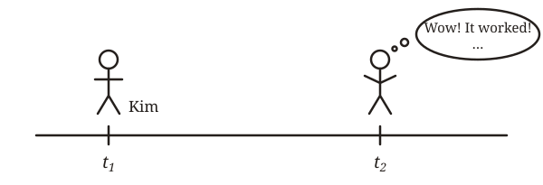

Personal Identity - Locke
PHIL-1 Lecture notes
1. What the debate over personal identity is about
1.1 The story of Kim Suozzi
Is death permanent?
Here’s an article from 2015 about a young woman, Kim Suozzi, who had recently died of cancer.
The article is about the unconventional steps Kim took in order to try to make her death only temporary.
Read the first page of the NY Times story about Kim Suozzi.
Kim and Josh are hoping that Kim herself will one day live again.
They seem to have a couple of different thoughts about how that might happen:
Is it really possible, though, for Kim to live again?
There are various scientific obstacles to Kim’s vision. The article talks about some of these.
But even if all of the purely scientific barriers are overcome, a more philosophical doubt lingers. Would it really be Kim back in existence again?
We may pose the philosophical question this way.
Here is Kim at time t1. Suppose that all the science works out. So now we have this individual at time t2. They wake up and think to themselves, “Wow! It worked! But what year is it? Are my parents still alive? Is Josh?...”

Is that person Kim?
Or, to ask that same question in a different way, we might give a name to this person.
Let’s not call her `Kim’ since that would prejudge the very issue that we want to ask about.
Let’s call her `Kayla.’
Is it the case that Kayla = Kim? Or no? What do you think?
1.2 What does it take for me to exist?
Trying to answer that question makes one wrestle with this problem: what does it take for me to exist?
We all undergo lots of changes over the course of our lives. But what is the limit? Can I get a whole new body? Could I come to have an entirely different personality? A whole different set of beliefs? What is absolutely essential to me, and what is not?
This is what the philosophical debate over personal identity is about.
Part of what makes it important is that it’s tied up with the issue of an afterlife.
We can’t decide whether an afterlife is even possible---whether it’s possible for me to exist after my earthly demise---without deciding under what conditions I continue on.